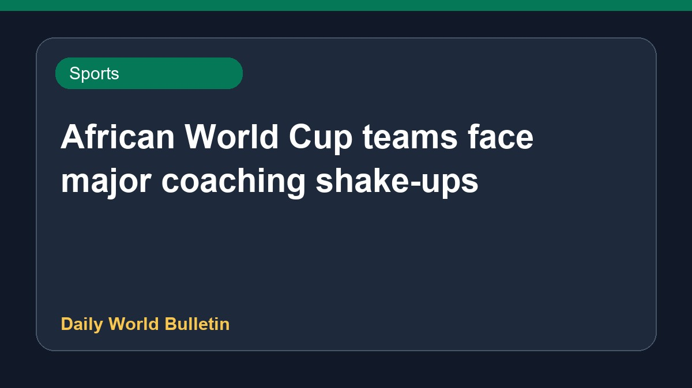

African World Cup teams face major coaching shake-ups

Following the conclusion of the 2026 tournament, the managerial landscape for African football teams has shifted dramatically. Several national sides have begun making significant changes to their coaching staff. Reports indicate that multiple federations have dismissed their managers in the wake of the global competition, setting off a widespread managerial carousel across the continent. Further details regarding specific appointments and departures remain limited as associations begin their restructuring process.
Original source: Sports News Sources
Football’s managerial carousel is up and running - The Hindu ↗
Football’s managerial carousel is up and running - The Hindu ↗